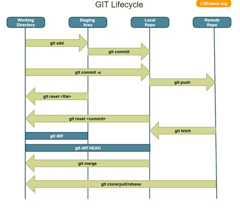

Git Notes
Table of Contents
- git
- What is git
- Git CMD
- git tag
- TODO Q)three main states in git
- Clonning a repository
- Q)Pull vs fetch
- Creating a Branch (git branch <branch-name>)
- log
- revert :
- Git reset
- TODO revert (Need to check if revert altering history of commits)
- reset vs revert
- Git branching Modeling
- merge
- TODO merge vs rebase vs cherrypick
- cheery pik
- RECOVER from a hard reset in git.
- conflicts
- Stash
- Interview Qusestion
- TODO Q) fork and clone
- connect local meachine (git) to remote meachine (github)
- Git GUI
- My Git Configuration
- gitlab tutorial
- Git AWS Setting
- Interview Git
git
What is git
- git is free and opensouce VCS (Version Control System) created by linux torvaldss in 2005. Version Control System mean which is used to track all change in project
- Using git
- No data is lost and undo previous data using his
- all users can access and share the project
- security: outsiders can access and edit the project
- git has (distributed repo )
TODO Q) git Vs SVN (Subversion)
SVN is centralised VCS , Git is distributed VCS SVN is still used because of its performance with large files won't be satisfied with Git.
Git CMD
- Creating a version control of local repository
- We need to Create a version contol file (
.git) it create bygit init
- We need to Create a version contol file (
# # # SET UP REPO # # # # git init # git clone https://<......> # git config --global user.email dankarthik25@gmail.com # set user.email # git config --global user.email >> prints dankarthik25@gmail.com # git config --golbal alias.co checkout # # # SAVE CHANGES # # # # git add # git commit # git archive master --format=zip - output=../name_of_file.zip # create a zip file # git bundle create ../repo.bundler master # stash uncommitted changes # # # INSPECT REPO # git status # git log # git tag # git blame filename.txt >> show who is responsible for editing all changes in file # # # # Parallel Developement git branch git merge git rebase # # # # git alias git init # Inicialize or Create a version control git status # View the Stagging Area git add <file> # Add files to stagging Area git add -A # all files in dir and sub dir and parent dir # Entire working tree even if you are in sub dir git add . # in current dir but not parent dir git add * git add - u # only update existing files but don't add new files git reset # to remove all files from stagging area git rm --cached <file> # Remove files in Stagging Area,local repo touch .gitignore # list all files that are need to ignore # Ignore files in Stagging Area git commit -m "fist commit" # Save-Commit to Local Repo git clone <url> <path> # default takes current path git clone https://github.com/..git # clone to current dir # Clone git remote add orgin https://github.com/.... # Connect Local Repo to Remote Repo git remote add gitlab-dan25 https://github.com/........ git remote -v git remote remove gitlab-dan25 git push origin master # Upload Local Repo to Remote Repo git push -u origin master git push gitlab-dan25 master git pull # Update Local Repo git diff <commit id> <commit id> # diff : View changes in files ## Creat Branch ,push, delete: git branch <branch-name> # create a new branch git chechout -b <branchname> # to create and moveing to the git branch -b # list the branch git branch # list of branch git branch -a # all the branch git branch --list # list of branch git branch feature1.0 git branch # feature 1.0 # * master (Current working on branch ) git checkout feature 1.0 git branch # * feature 1.0 # master (Current working on branch )
NOTE :
BEFORE MERGING YOU NEED TO PULL THE LATEST CODE OR LESS YOU WILL GO INTO MERGE CONFLICTS
git checkout master
git pull origin master
git merge feature 1.0
git branch -a # * calc-branch -a # master # remotes/origin/HEAD -> origin/master # remotes/origin/feature 1.0 # remotes/orign/master git checkout master git pull origin master git branch --merged # * master # HERE you can see branched which are merged in this master branch # Currently there are no branchs which are merged in master # Merge git merge <branch-name> # merge brach to master git git checkout master git merge feature 1.0 git branch --merged # feature 1.0 # * master git branch -d feature 1.0 # delete the branch local git branch -a # get all branchs in local and remote # * master # remote/origin/HEAD -> origin/master # remote/origin/feature 1.0 # remote/origin/master git push origin --delete feature 1.0 # * master # remote/origin/HEAD -> origin/master # remote/origin/master # Here you can see feature 1.0 has been deleted
git checkout UncleDaveEmacs # Switch one branch to other git push -u origin UncleDavesEmacs # push branch from local repo to remote repo git branch -D UncleDaveEmacs # delete a branch git push orign <branch-name> # push branch to remote repo git branch -D devop # git delete a branch in local repository git push origin --delete <branch name> # delete branch at remote repositort git push origin --delete UncleDaveEmacs # delete a branch in remote repository
git tag
The git tag is used to ca-pture (tag) a point in history that is used for a marked version relase i.e (v1.0.1). A tag is like a branch that doesn't chagnes. Tags, after being created, have no further history of commits.
git tag <tag_name>
TODO Q)three main states in git
- Git has three main states that your files can reside in:
- Working-Dir, Stagging Area, Local repo, Remote repo
Working-DirFile but have not haveVersion Control(committed)Stagging AreaMarked a modified file which are to be commitCommittedCurrent files are commented/safed in local Repository.git directory.Remote Repository

How to Commit files ?
initialize the file or local-repository (git init):()
Create a version control folder or initialize or track (changes or versions) we have to initialize the folder
# go the directory (Local-Repositore) that has to be version control git init
This will create a .git file in the current directory which consist of all the change that are to be done
Adding files to git (git add file)
files which are uncommited are changed to staged
git add <file> # add files to git git add -A # add all file git status # show <file> or all file are change to commited area
Removing files from git (git reset file)
git reset <file> # remove files from stating area( committed) git reset # remove all files
.gitignore
hidden file .gitignore contain the list of the all the file and folder that ignore by git for version control
touch .gitignore ls -a >> .gitigonre # and remove the files need to be VC
Commit files (git commit)
Note : All files are need to to add/ignored then only we can commit files
git add -A git commit -m "Initial Commit" # file are commited git status # show nothing to commit , working directoru clean
Commit Undo last commit MESSAGE
git commit -m "Undo and Rewrite the previous commit"
Connect Local Repository to Remote Repository
git remote add origin url # eg: git remote add origin https://github.com/dankarthik25/pythonUdemyTutorial
Push Local Repository to Remote Repository (git push)
git push origin master # git push origin master -f # Force if cmd not works
TODO Pull Remote Repository to Local Repository
git pull
Clonning a repository
git clone <url> <path- which dir> git clone ../remote_repo.git . git clone <url> . # . means current direcory
Q)Pull vs fetch
- In the simplest terms, git pull does a git fetch followed by a git merge.
- git fetch
- Update your remote-tracking branches under refs/remotes/<remote>/.
- No change in local repo/branch,Staging Area, Working Dir.
- git pull
- Update your remote-tracking branches under refs/remotes/<remote>/.
- Change local branch and Working Dir
- Note: All the Untracked data will be lost in Working Dir
- Note: merge only current branch wich it is pulled
# fetch hold data(fetch data from remote repository to local repository) r but not merges with current reposiotory git fetch git merge # it merges local repository to current repository # pull git pull origin <branch-name> # git fetch and git merge
Creating a Branch (git branch <branch-name>)
source : https://nvie.com/posts/a-successful-git-branching-model/
## Creat Branch ,push, delete: git branch <branch-name> # create a new branch git branch UncleDaveEmacs # Create a branch git branch # list of branch git branch --list # list of branch git checkout UncleDaveEmacs # Switch one branch to other git chechout -b <branchname> # to create and moveing to the <branch-name> git push -u origin UncleDavesEmacs # push branch from local repo to remote repo git branch -D UncleDaveEmacs # delete a branch git push orign <branch-name> # push branch to remote repo git branch -D devop # git delete a branch in local repository git push origin --delete <branch name> # delete branch at remote repositort git push origin --delete UncleDaveEmacs # delete a branch in remote repository
log
Consist of < commit id, Author, Date, Comment on commit > mode on your branch
git log # give <git id,author, date, commit message> git log --online # give short version only < commit id, comment- message > #commit 874357761ce77a9a925c1066d9cef6e81a5881a5 #Author: Dankarthik25 <dankarthik25@gmail.com> #Date: Fri Apr 10 06:56:16 2020 +0530 # Revised Docker #commit 7432654c56923fe3bc18b19d7ac69e70300d86f4 #Author: Dankarthik25 <dankarthik25@gmail.com> #Date: Thu Apr 9 07:16:05 2020 +0530 # Seperate Docker_Kubernetics # my Notes on Prog git log --oneline # 70da939 (HEAD -> master, origin/master) New Change # 53dd0ee New Change # f537b27 New Change # 432784e New Change # 546bc17 Link and Compose added # 8743577 Revised Docker # 7432654 Seperate Docker_Kubernetics # e981603 Seperate Ansible # abb9dee last commit # 9ab9c9a Added Ansible and Docker, Kubernetic files # c39821d my Notes # 370fca2 my Notes on Prog
revert :
git revert is used to record some new commits to reverse the effect of some earlier commits (often only a faulty one).
when code is pushed to remote but you want changes back from remote =>(to) local
git log --oneline # to get the commit id git revert 77592f3 # to change code from to remote to local repo # to change the code from local to remote we need to push from local to remote git push origin master
Git reset
The git reset command allows you to RESET your current head to a specified state. You can reset the state of specific files as well as an entire branch. This is useful if you haven't pushed your commit up to GitHub or another remote repository yet.
If you want to throw away all uncommitted changes in your working directory, you should see git-reset[1], particularly the –hard option.
Three types of reset
| Type of reset | Description |
|---|---|
| soft | keep all changes in stagging area, remove from local repo |
| mixed | keep all changes in workind dir, remove from stagging and local repo |
| hard | removes all changes from local repo,stagging and local repo |
- In the simplest terms:
| Type of reset | Workdir | Stagging Area | Local Repo | git log | Remote Repo |
|---|---|---|---|---|---|
| soft | Prescent | moved to Stagging Area | Removed | Removed | Prescent |
| mixed | Moved to Workdir | Removed | Removed | Removed | Prescent |
| hard | Removed | Removed | Removed | Removed | Prescent |
TODO revert (Need to check if revert altering history of commits)
Both the git revert and git reset commands undo previous commits. But if you've already pushed your commit to a remote repository, it is recommended that you do not use git reset since it rewrites the history of commits. This can make working on a repository with other developers and maintaining a consistent history of commits very difficult.
Instead, it is better to use git revert, which undoes the changes made by a previous commit by creating an entirely new commit, all without altering the history of commits.
# delete file in local and remote repo # To remove file for remote to git revert <commitid> git commit - m "remove from remote" git log --oneline #commit id : 1 #commit id : 2 #commit id : 3 #commit id : 4 #commit id : 5 git reset --soft 2 # keep the commit after 2 (3,4,5) #commit id : 3 #commit id : 4 #commit id : 5 git reset --hard 77592f3 # git reset --soft 77592f3 # local repo to stagging git reset --mixed 77592f3 # local repo to work - dir git log --oneline # beef857 Revert "created test3 file" # 77592f3 created test3 file # 1c08f78 created test2 file # 78b777d created test1 file # a7968c1 Created hh # 4b30445 Created bb # 2e435ca Created gg file to intall git git revert 1c08f78 git push origin master git clean -df # clean unstaged file and dir
reset vs revert
Git branching Modeling
If your team is doing continuous delivery then it is suggested to follow Git branch model. Here is a simple version of it https://nvie.com/posts/a-successful-git-branching-model/
At the core, the development model is greatly inspired by existing models out there. The central repo holds two main branches(master(origin) , developer) with an infinite lifetime:
- master : We consider origin/master to be the main branch
develop: When the source code in the develop branch reaches a stable point and is ready to be released, all of the changes should be merged back into master somehow and then tagged with a release number.
Therefore, each time when changes are merged back into master, this is a new production release by definition. We tend to be very strict at this, so that theoretically, we could use a Git hook script to automatically build and roll-out our software to our production servers everytime there was a commit on master
Any feature branch from develop Must merge back into develop. feature branches are limited time branch which will eventually merged back to develop branch
Supporting branches: Development model uses a variety of supporting branches to aid
- parallel development between team members,
- ease tracking of features,
- prepare for production releases and to
- assist in quickly (bug)fixing live production problems.
Unlike the main branches, these branches always have a limited life time, since they will be removed eventually.
The different types of branches we may use are:
feature Any feature branch from develop Must merge back into develop. feature branches are limited time branch which will eventually merged back to develop branch
naming convention:anything except master, develop, release-, or hotfix-
Feature branches (topic branches) are used to develop new features for the upcoming or a distant future release. When starting development of a feature, the target release in which this feature will be incorporated may well be unknown at that point. The essence of a feature branch is that it exists as long as the feature is in development, but will eventually be merged back into develop (to definitely add the new feature to the upcoming release) or discarded (in case of a disappointing experiment).
release branch Any Release branches from develop and Must merge back into develop and master. naming convention(release-*)
- Release branches support preparation of a new production release.
- Allow for minor bug fixes and
- preparing meta-data for a release (version number, build dates, etc.).
By doing all of this work on a release branch, the develop branch is cleared to receive features for the next big release.
The key moment off a new release branch when
- atleast all features that are targeted for the release-to-be-built must be merged in to develop at this point in time.
- All features targeted at future releases may not—they must wait until after the release branch is branched off.
hotfix(BUG-fix) Any hotfix branch from master Must merge back into develop and master naming convention:hotfix-*
They arise from the necessity to
- act immediately upon an undesired state of a live production version.
- When a critical bug in a production version must be resolved immediately, a hotfix branch may be branched off from the corresponding tag on the master branch that marks the production version.
The essence is that team members (on the develop branch) can continue, while another person is preparing a quick production fix.
merge
git checkout master # to git <branch-name> git merge devop # git merge <other-branch-name> # merge the devops branch into master branch ## Example # create nn file in "devop" branch git checkout devop touch nn git add . git commit -m "created nn file" git push origin devop # merge "devop" branch to "master branch" git chekchout master
TODO merge vs rebase vs cherrypick
git merge :
- Is a non-destructive operations
- Existing branes are not change in any way
- Create new <commit-id> in original(main) branch
- Normal merge changes history and squash merge will not change history all original but new commit-id is created .
git rebase:
- Moves the entire 2nd branch to main branch
- Re-writes the project history
- We get much cleaner and linear project
git cherry-pick:
- Add specific <commit -id> to 1st branch
- For cherry-pick add particular <commit -id>
git checkout master touch aaa git add aaa git commit -m "created aaa file in master" git checkhout -b "release-1.0" git rebase master
cheery pik
Not all commit id in branch are merged in main branch but selected commit id are merged in main branch
git checkout -b future touch ww git add . git commit -m "create ww file" touch ww touch www git add . git commit - m "create www file" touch wwww git add git commit - m "create wwww file" touch wwwww | git add . git commit -m "create wwwww file" git log --online # c459d7a created wwwwww file # b866590 created wwwww file # b510fa6 created www file # b6b5153 created ww file # 9d75eb8 created aaa file in master # 7fb9174 created file called mm # Q) merge only www file from future brach to master git log --online # to get the <commit -id> of www file : b877590 git checkout master git cherry-pick b877590 git log --online # b866590 created wwwww file # 9d75eb8 created aaa file in master # 7fb9174 created file called mm
RECOVER from a hard reset in git.
Use:
git reflog
6d23789 (HEAD -> master, gitlab-deepalgo/master) HEAD@{0}: reset: moving to 6d23789
f16a71e HEAD@{1}: commit: afadf
9a22abf HEAD@{2}: reset: moving to HEAD@{5}
cf07d48 HEAD@{3}: commit: Try to restore data
6d23789 (HEAD -> master, gitlab-deepalgo/master) HEAD@{4}: reset: moving to HEAD@{2}
641ca86 (origin/master) HEAD@{5}: reset: moving to HEAD~1
9a22abf HEAD@{6}: reset: moving to HEAD~1
6d23789 (HEAD -> master, gitlab-deepalgo/master) HEAD@{7}: commit: removed zerodah personal doc
9a22abf HEAD@{8}: commit: Uploading to gitlab private repo
641ca86 (origin/master) HEAD@{9}: commit (initial): basics info
#to get the identifier of your commit. Then use:
git reset --hard 9a22bf
git push
git checkout f16a71e
git commit -m "Newly saved file"
Changes need to be made
conflicts
When two branch <kar> <sanjay> make different change in a same file
git checkout master vi ww # hello git add . git commit -m "modified ww file" git log git checkout future vi ww # hello, # book ticktes git commit -m "modifiled ww file" git checkout master git merge future #ERROR mESSAGE: CONFLICT (content): merge confilct in ww # : fix conflicts and then commit the results vi ww
Stash
git stash
git stash list [<log-options>] git stash show [-u | --include-untracked | --only-untracked] [<diff-options>] [<stash>] git stash drop [-q | --quiet] [<stash>] git stash pop [--index] [-q | --quiet] [<stash>] git stash apply [--index] [-q | --quiet] [<stash>] git stash branch <branchname> [<stash>] git stash [push [-p | --patch] [-S | --staged] [-k | --[no-]keep-index] [-q | --quiet] [-u | --include-untracked] [-a | --all] [(-m | --message) <message>] [--pathspec-from-file=<file> [--pathspec-file-nul]] [--] [<pathspec>…]] git stash save [-p | --patch] [-S | --staged] [-k | --[no-]keep-index] [-q | --quiet] [-u | --include-untracked] [-a | --all] [<message>] git stash clear git stash create [<message>] git stash store [(-m | --message) <message>] [-q | --quiet] <commit>
when you want to record the current state of the working directory and the index, but want to go back to a clean working directory. The command saves your local modifications away and reverts the working directory to match the HEAD commit.
updated stashed by command line can be listed with git stash list
Inspected with git stash show and
restored with git stash apply.
Calling git stash without any arguments is equivalent to git stash push
$ git pull
$ git branch add
$ git checkout add
# to some temp update code and like add Notes but no code and you want to save changes without commit
# TO SAVE TEMP CHNAGES USING STASH
$ git stash save "Worked on add Notes"
$ git diff # No chanegs
$ git status # No changes
$ git stash list # give the list stash
# stash@{0}: On add: Worked on add function
$ git stash apply stash@{0} # load the temp change in working dir but stash will be there
# stash@{0}: On add: Worked on add function
$ git stash pop # load the temp change in working and remove the changes from stash list
$ git stash list
# NO Changes are present
# git stash list
$ git stash
$ git pull
$ git stash p
# ... hack hack hack ... $ git switch -c my_wip $ git commit -a -m "WIP" $ git switch master $ edit emergency fix $ git commit -a -m "Fix in a hurry" $ git switch my_wip $ git reset --soft HEAD^ # ... continue hacking ...
Interview Qusestion
- Q)If branch and merge, and pull and push are done my devops then what is role of devops
- Ans) devops role is to create hotfix branch and and set a maile to devops
what is use of git
- to track all changes in file or directory in VCS [Version Control System]
- can not lose data -delete -revert
- all users can access and send data
Different type of vcs
- cenrtal vcs svn
- distributed vs : github or bitbucket
TODO Q) fork and clone
connect local meachine (git) to remote meachine (github)
ssh-keygen -t rsa -b 4096 -C "<email-address.com>" # Enter file in which to save the key : test_key ls | grep test_key test_key # private key # can't be shared test_key.pub # public key can be shared cat test_key.pub
In github setting >> SSH and GPG Keys >> New SSH Key Title : Key name Key : past testkey.pub
tell git about ssh key that we generated
Visit Github about : Generating a new SSH key and adding it to the ssh-agent
git push origin master # no hhtp address required and no github email_id and password is required as we done ssh connection
push locally create repo (local-repo)
create a empty repo in github with same name in local-repo copy http link of github repo http:github_repo
# Inside local-repo git remote add origin <http:github_repo> git push -u origin master
git push origin master
Git GUI
GUI git kraken PAID git diff Sublime merge PAID git tower paid git sourcetree free dev: git bucket available: win, mac , Not Linux github git ahead free Webstore VS Code + git panel + inbuild termial
My Git Configuration
Manage Multiple git account in github, gitlab, aws-codecommit
Manage differnet ssh-key for different account and servers like (github, gitlab, aws-codecommit
Create ssh key and share to github/gitlab/aws-commit
cd ~/.ssh # ssh-keygen -t rsa -b -C karthik.dahchuka@deepalgorithms.in "gitlab-deepalgo" ssh-keygen -o -t rsa -C karthik.dahchuka@deepalgorithms.in # ssh-keygen -t ed25519 -C "karthik.dahchuka@deepalgorithms.in" # ed25519 is more secure than rsa # save as id_rsa_gitlab-deepalgo with password : # Enter file in which to save the key (~/.ssh/id_rsa): id_rsa_gitlab_deepalgo cat id_rsa_gitlab_deepalgo.pub # copy code and past in github or gitlab ssh key ssh-keygen -t rsa -b 4096 -C "gitlab-dankarthik25" # save as id_rsa_gitlab-dan25 with password
Config ssh wit
pwd # ~/.ssh/ touch config # Work account - default config Host gitlab.com-deepalgo HostName github.com User git IdentityFile ~/.ssh/id_rsa_gitlab-deepalgo # Personal Account - Host github.com-codertrain HostName github.com User git Identityfile ~/.ssh/id_rsa_gitlab-dan25
Test ssh connection
cd .. ssh-add -D # remove all previous keys ssh-add id_rsa_sagarjunnu # add below keys ssh-add id_codertrain # check existing kesy ssh-add -l # check ssh connection ssh -T github.com-sagarjunnu ssh -T github.com-codertrain # clone and push repo #NOTE: in gitclone with ssh replace <git@github.com:> with <git@github.com-codertrain> # If not git will use default user # Example git clone git@github.com-codertrain:coder-train/multipel-git-accounts-demo.git # check git user git config user.name
Test your ssh is connect with git
Test if ssh is working or not
#get newly created url : git clone git@gitlab.com:deepalgorithms1/cross-account-codepipeline-in-aws.git # check clone with ssh git clone git@gitlab.com-deepalgo:deepalgorithms1/cross-account-codepipeline-in-aws.git # link existing project to newly created gitlab repo git remove add gitlab-deepalgo git@gitlab.com-deepalgo:deepalgorithms1/cross-account-codepipeline-in-aws.git # # # ########################### # # # # ############################ # check original remote origin url git remote -v # list all remote repo links #origin git@github.com:user1/my-repo.git #change it to use your custom `user1-github` hostname git remote rm origin git remote add origin git@user1-github:user1/my-repo.git
config git
cd ..
mkdir work
nano ~/work/.gitconfig
# paste below block
# ########################################
[user]
name = Coder Train
email = codertrain@gmail.com
# ###################################
cd ~/.gitconfig
[user]
name = Sagar Junnarkar
email =sagarjunnu@gmail.com
[includeIf "gitdir:~/work/"]
path = ~/work/.gitconfig
git cmd
# get user name and email git config user.name git config user.email git config credential.username git config --get user.name git config --get user.email # Create user name and email git config --global user.name "Mona Lisa" git config --global user.email "monalisa@gmail.com" # list all users in git git config -l git config --list git remote -v git remote add origin https://github.com/dankarthik25/mynotes git remote add gitlab-dan25 git@gitlab: git remote rm gitlab-dan25
git remote list
gitlab tutorial
Branchig Strategies
Github Branching Strategies Git branching Strategies Github branching Strategies
gitlab CI/CD pipeline
pipeline : with in pipeline we can define stages and Jobs Stages: Define chronological order of jobs job:
- define actual steps to executed (such as running(jenkins jobs) commands to complie code )
Runners:
- Open-source application that executes the instruction defined with jobs
Create CI/CD pipeline
create a yaml in git repo : with name : .gitlab-ci.yaml
Method of create yaml file :
- from gitlab git reposiotory :
add new files/dir - LeftSideBar : CI/CD section :
Editor - local repo create and push
Choose from Editor will give template
Gitlab Migrating
Jenkins Jobs : Gitlab Runner Jenkins "environment" dir : Gitlab "variables" key Jenkins "tools" dir :
Gitlab Pipeline
Deploy artifacts from a gitlab pipeline to Gitlab Package Registry
Describe Gitlab releases
Describe Gitlab Package, Container and Infrastructure registries
Package Registries
Container Registries
Infrasture Registries
Git AWS Setting
AWS CodeCommit - fatal: repository 'https://git-codecommit.us-east-1..' not found
git config --global credential.UseHttpPath true
Interview Git
What is git? Edureka interview questions